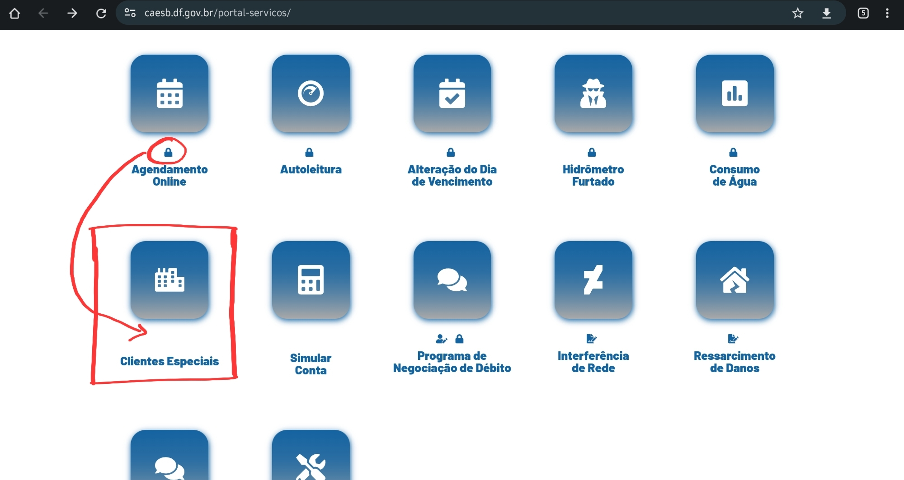
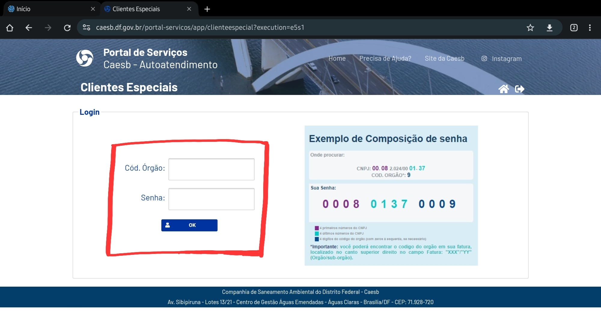
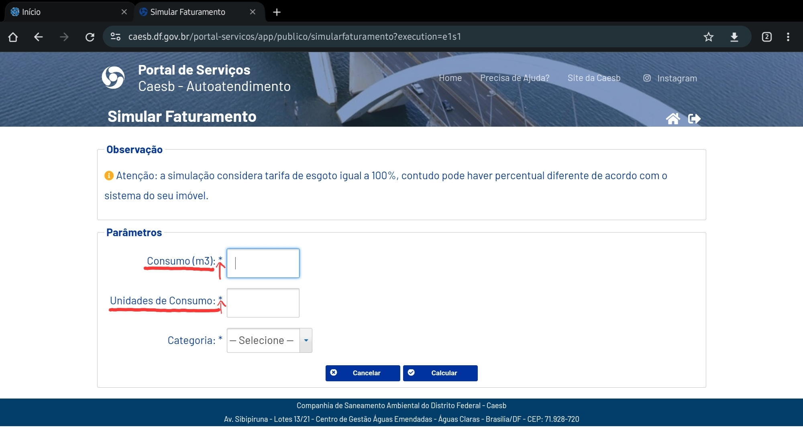
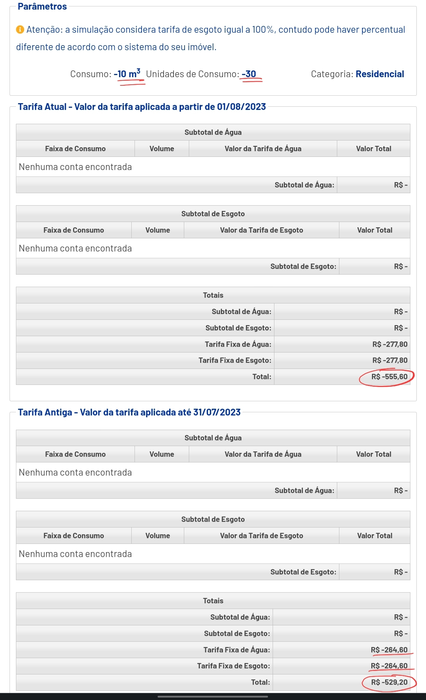

Princípios gerais do projeto
Introdução
Autores, como Norman (1988), destacam a necessidade de projetarmos o sistema utilizando um modelo conceitual que permita o usuário aprender rapidamente e sem difuculdade. Este modelo conceitual deve auxiliar a interpretar o relacionamento entre as ações e informações apresentadas pelo sistema e o conhecimento no mundo. Norman também destava que o design deve facilitar: determinar quais ações são possíveis a cada momento, fazendo uso de restrições (constraints); tornar as coisas visíveis, incluindo o modelo conceitual do sistema, as ações alternativas e os resultados das ações; avaliar o estado corrente do sistema e seguir mapeamentos naturais entre as intenções e as ações requeridas, entre as ações e o efeito resultante, e entre a informação que está visível e a interpretação do estado do sistema.
Para isso, os princípios e diretrizes abordam os tópicos:
- Correspondência com as expectativas dos usuários;
- Simplicidade nas estruturas das tarefas;
- Equilíbrio entre controle e liberdade do usuário;
- Consistência e padronização;
- Promovendo a eficiência do usuário;
- Antecipação;
- Visibilidade e reconhecimento;
- Conteúdo relevante e expressão adequada;
- Projeto para erros;
Objetivo
Temos por objetivo avaliar, de acordo com os princípios de desing, se o site da Caesb viola algum desses objetivos. Este artefato foi realizado por Jefferson Sena e Tiago Albuquerque.
Correspondência com as expectativas dos usuários (Não violado)
Deve existir uma correspondência entre as variáveis do mundo real e do sistema projetado. Se um sistema projetado é uma versão de algo que já existe no mundo real, esse sistema deveria corresponder com as expectativas que o usuário tem sob o mundo real. Devemos nos certificar de que o usuário consegue determinar os relacionamentos entre: intenções e ações possíveis; entre ações e seus efeitos no sistema; entre o estado real do sistema e o que é percebido pela visão, audição ou tato; entre o estado percebido do sistema e as necessidades, intenções e expectativas do usuário.
Simplicidade nas estruturas das tarefas (Não violado)
Norman (1988) recomenda simplificar a estrutura das tarefas, reduzindo a quantidade de planejamento e resolução de problemas que elas requerem. Tarefas que são desnecessariamente complexas devem ser reestruturadas, utilizando inovações tecnológicas.
Equilíbrio entre controle e liberdade do usuário (Violado)
É importante manter o usuário no controle durante o design de IHC. O usuário deve se sentir no comando, ter o controle sobre o computador, a interface e o ambiente de trabalho. É necessário reduzir o número de opções ou decisões que o usuário precisa tomar constantemente. Os usuários não devem ser presos a um único caminho de interação. Usuário experientes devem ser possibilitados de iniciarem ações e controlar o sistema. Oferecer a capacidade dos usuários de desfazer ações.
Violação
Esta violação está presente em diversas consultas do site. Trata-se da página que é aberta após o usuário selecionar a inscrição. O conteúdo aberto, como consulta a 2° Via não é relevante no momento, mas sim o botão de pesquisar por outra inscrição, pois só por meio dele o usuário retorna a página de inscrições cadastradas não sendo possível retornar com o retorno do navegador, mesmo que seja a sequência padrão de páginas do site. Sendo assim, o usuário só consegue de fato voltar a inscrição quando aperta o botão, pois se apertar o botão de retornar (destacado pela seta) o site realiza o logoff do usuário.
Figura 1 - Violação: Equilíbrio entre Controle e Liberdade do Usuário

Fonte: Caesb.
Consistência e Padronização (Violado)
Norman (1988) recomenda assegurar a consistência da interface com o modelo conceitual embutido no sistema, para facilitar o aprendizado e o uso. Isso significa que todos os aspectos do produto, incluindo design, imagem, documentação e manuais, devem estar alinhados com e exemplificar o funcionamento do modelo conceitual subjacente. De acordo com Norman e Tognazzini (2014), a consistência mais importante é com as expectativas dos usuários. A terminologia deve ser consistente em todo o sistema. No entanto, alguns elementos de interface exigem maior consistência do que outros. Elementos que não têm correspondência visual ou cuja operação é internalizada pelos usuários devem permanecer consistentes em todo o sistema. Por outro lado, elementos que têm comportamentos diferentes devem ter aparências distintas para evitar confusão.
Violação
Nesta violação, a opção "Clientes Especiais" não possui o cadeado identificando que é uma área reservada para usuários cadastrados e que necessita de login para acessar. Porém, quando acessa a aba é direcionado para uma área de login em que é necessário inserir os dados cadastros.
Figura 2 - Consistência e Padronização

Fonte: Caesb.
Figura 3 - Consistência e Padronização

Fonte: Caesb.
Promovendo a eficiência do usuário (Não violado)
O usuário deve ser mantido ocupado, processamento demorados não devem impedi-lo de realizar outras atividades no sistema. O sistema deve salvar coisas já feitas pelo usuário, evitando a perda de trabalho. O sistema deve fornecer atalhos e aceleradores, como teclas de atalho e botões na barra de ferramenta.
Antecipação (Violado)
Consiste em tentar prever o que o usuário quer e precisa, tomando iniciativas e fornecendo informações adicionais que podem ser úteis antes mesmo que o usuário pergunte por elas.
Violação
Nesta violação, o site não informa a descrição dos parâmetros ao usuário dificultando assim a execução da funcionalidade, uma vez que nem todos os usuários têm conhecimentos dos parâmetros.
Figura 4 - Violação: Antecipação

Fonte: Caesb.
Visibilidade e reconhecimento (Violado)
Visibilidade e Reconhecimento: O estado do sistema, os objetos, as ações e as opções devem estar atualizados e facilmente perceptíveis. O usuário deve reconhecer as partes da aplicação. O sistema deve fornecer feedbacks a respeito do que ocorreu ou está ocorrendo, no tempo correto. Ações frequentes, informações de status podem ser sutis, mas par ações infrequentes e com grandes consequências, a resposta deve ser mais substancial.
Violação
A figura em destaque não é reconhecida por parte dos usuários como um caminho para a página "Portal de Serviços" pois aparenta ser somente uma imagem, fazendo não ser facialmente perceptível, violando o princípio de Visibilidade e Reconhecimento.
Figura 5 - Violação: Visibilidade e Reconhecimento

Fonte: Caesb.
Conteúdo relevante e expressão adequada (Violado)
Projeto estético e minimalista. Mensagens de instrução e ajuda devem ser concisas e informativas sobre problemas que ocorrerem. Rótulos de menus e botões devem ser claros e livres de ambiguidade e o texto deve ser legível.
Violação
Na figura o termo "home" presente no menu, pode não ser suficientemente claro para todos os usuários, principalmente para aqueles que não estão acostumado com a expressão "home". É preferível optar por "página inical" ou "início" no local de "home"
Figura 6 - Violação: Conteúdo relevante e expressão adequada

Fonte: Caesb.
Projeto para erros (Violado)
Deve ser fácil reverter as operações e difícil realizar ações irreversíveis. Os usuários devem ser auxiliados quanto a reconhecerem, diagnosticarem e se recuperarem de erros. Controle de funções utilizadas frequentemente não devem ficar ao lado de outros controles que são considerados perigosos ou que raramente são usados.
Violação
Essa função tem por objetivo simular uma conta, baseado nos campos "consumo", "unidade de consumo" e "Categoria". Ela viola o princípio de Projeto para erros pois permite que o usuário insira valores negativos nos campos "consumo" e "unidade de consumo" e faz a impressão da conta com valores negativos, o que é impossível de acontecer e é um erro.
Figura 7 - Violação: Projeto para Erros

Fonte: Caesb.
Referências
1. BARBOSA, S. D. J.; SILVA, B. S. Interação Humano-Computador. Rio de Janeiro: Elsevier, 2011.
Histórico de versão
| Versão | Data | Descrição | Autor(es) | Revisor(es) |
|---|---|---|---|---|
| 1.0 | 19/10/2023 | Adiciona Princípios Gerais do projeto | Jefferson e Tiago | Leandro e Pedro |
| 1.1 | 22/10/2023 | Adição de algumas imagens e descrição das violações | Jefferson e Tiago | Leandro e Pedro |